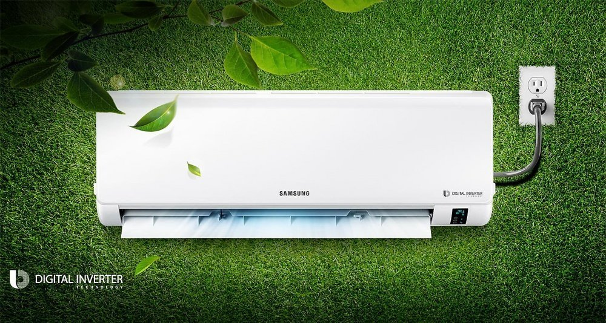
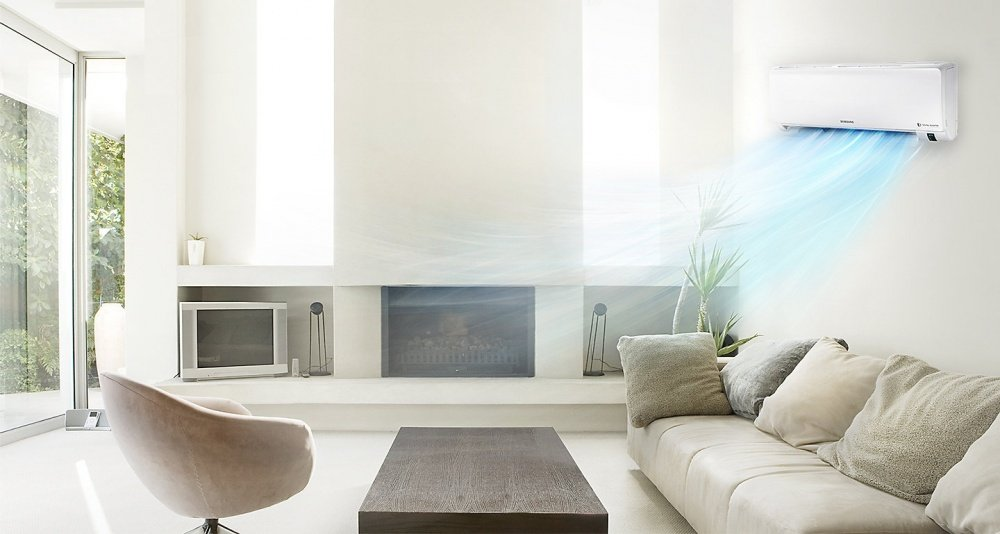
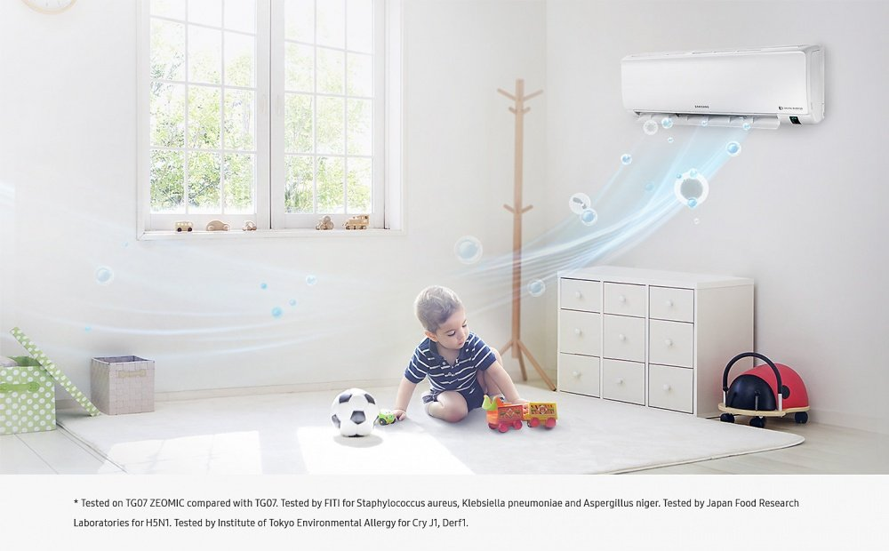
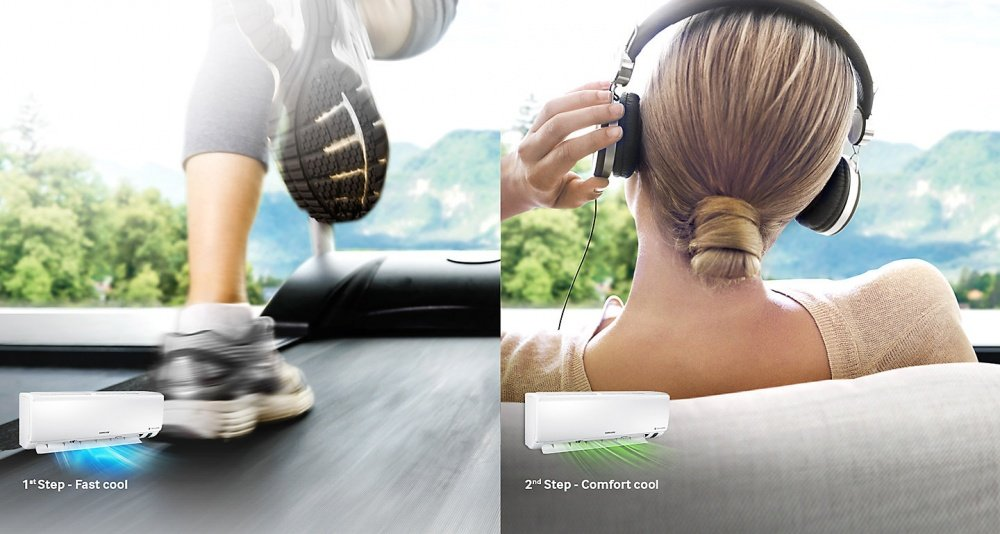
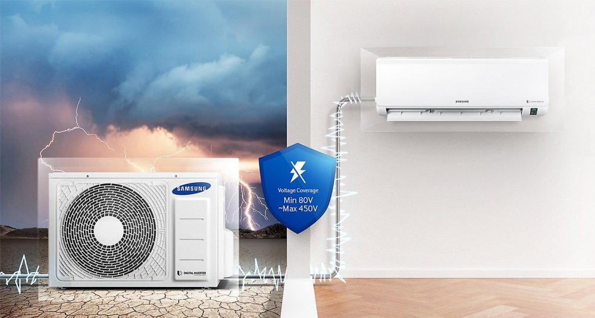
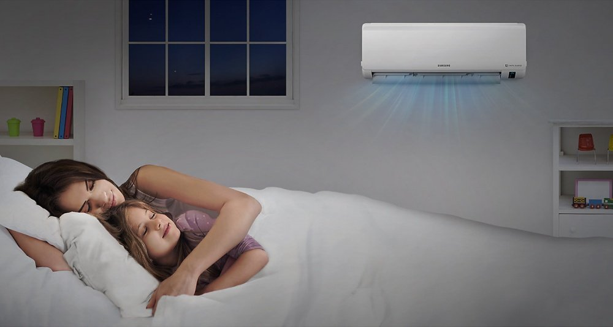
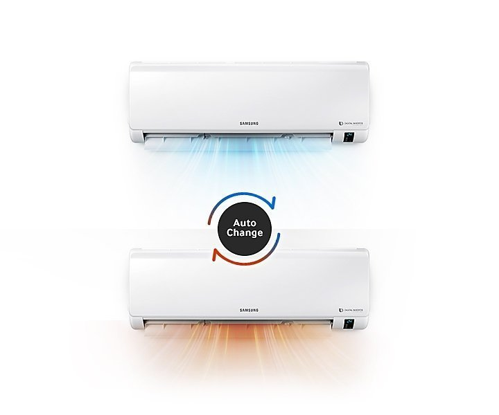
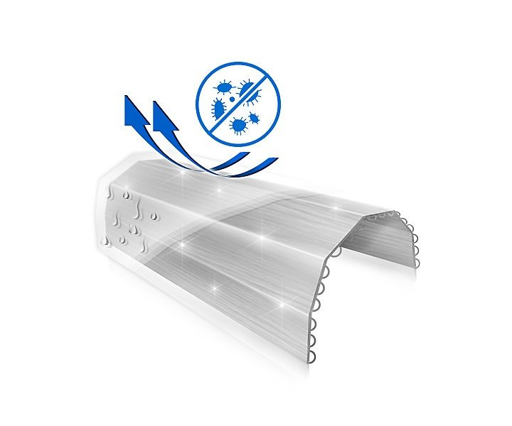

Funcționează inteligent, economisește energie
Tehnologia invertorului digital cu 8 poli, eficientă din punct de vedere energetic, menține temperatura dorită, nu este necesar să opriți și să porniți frecvent aparatul de aer condiționat. Astfel, consumă mai puțină energie * și oferă confort pe o perioadă lungă de timp.

Mod de răcire rapidă
Răcirea rapidă răcește aerul mult mai repede prin rularea compresorului la putere maximă și viteză maximă a ventilatorului timp de 30 de minute *. Invertorul digital cu 8 poli ajută la atingerea rapidă a frecvenței maxime în timpul pornirii.

Păstrează aerul curat
Filtrul 3 Care asigură aer proaspăt și menține interiorul unității interioare curat. În plus față de prinderea prafului, elimină până la 99% din anumiți viruși, bacterii și alergeni * pe măsură ce trec prin rețeaua sa filtrantă densă.

Vă menține răcoros și confortabil
Sistemul de răcire în două trepte începe rapid să răcească aerul în modul Fast Cool. Apoi, aparatul de aer condiționat trece automat în modul Comfort Cool pentru a menține temperatura dorită, deci nu este nevoie să modificați constant setările.

Stabilitate de performanță
Aparatul de aer condiționat Samsung poate funcționa în cele mai dure condiții atmosferice datorită tehnologiei Triple Protector Plus. Protejează împotriva întreruperilor de curent fără a fi nevoie de un regulator de tensiune separat *. De asemenea, aparatul de aer condiționat are un strat anticoroziv și este capabil să reziste la temperaturi extrem de ridicate.

Somn confortabil
Modul de somn bun creează climatul ideal în dormitorul dvs. pentru un somn bun. Controlul temperaturii vă menține confortabil, astfel încât să puteți adormi rapid, să dormiți profund și să vă treziți alert.

Control automat al temperaturii
Funcția Auto Change Over selectează automat modul de funcționare (răcire sau încălzire) necesar pentru menținerea temperaturii setate. În acest fel, obțineți o temperatură constantă confortabilă, fără a fi nevoie să modificați setările.

Curățare automată
Când aparatul de aer condiționat este oprit, funcția Auto Clean pornește automat ventilatorul pentru a îndepărta praful și umezeala din schimbătorul de căldură. În acest fel rămâne curat și uscat, ceea ce previne dezvoltarea bacteriilor și a mucegaiului.
